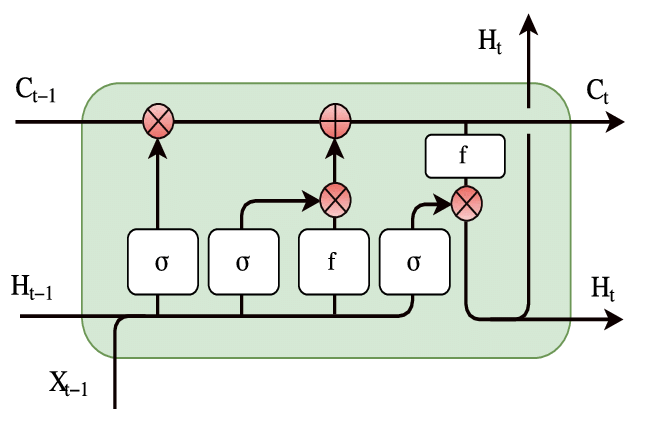

Analyzing Model Tradeoffs in Predicting Length of Stay (LOS) in eICU Patients
 Source: Managed Healthcare Executive
Source: Managed Healthcare Executive
Patients with prolonged stay often account for high resource consumption [1], and so, are a potential loss of revenue from a hospital management perspective. This is especially important in the case of Intensive Care Unit (ICU) and electronic ICU (eICU) patients due to their intensive need for care resources like nurses, drugs, surgeons, X-ray machines, etc., for continuous monitoring. Data mining and predicting/projecting the remaining length of stay (rLOS) for a patient will help allocate resources efficiently and provide timely services to patients.
The challenge for developing such a predictive model arises from the incomplete understanding of the complex clinical factors that may be involved and their interactions or relationships that lead to a specific LOS. This is a potential application for neural networks, which are considered universal function approximators. Since we are handling time-series data in the form of patient records, we mainly use CNNs and RNNs (and related architectures) to predict rLOS.
In addition to having a predictive model, an accurate understanding of the factors that are closely associated with LOS can allow for efficient hospital resource management, savings to a healthcare system, and better patient care by reducing readmissions. In this regard, neural networks fall short, as they are not interpretable. This “black box” behavior of neural networks leads us to the first tradeoff that we consider in this blog – performance vs. interpretability.
Also, the dataset is sensitive for the patients and must be protected. All countries have laws to protect privacy, leading to difficulties in the data collection phase. Many hospitals may refuse to share healthcare data without any Health Insurance Portability and Accountability Act (HIPAA) agreements or data governance in place. Therefore, we also investigated a Federated Learning framework to address such privacy issues. This distributed learning framework leads us to the second tradeoff – performance vs. privacy security.
The eICU Database
The eICU Collaborative Research Database [2] is a multi-center intensive care unit database with high granularity data for over 200,000 admissions to ICUs monitored by eICU programs across the United States. The eICU database comprises 200,859 patient unit encounters for 139,367 unique patients admitted between 2014 and 2015 to 208 hospitals located throughout the US.
The database is de-identified and includes vital sign measurements, care plan documentation, severity of illness measures, diagnosis information, treatment information, and more. The data is publicly available after registration, including completion of a training course on research with human subjects and signing of a data use agreement mandating responsible handling of the data and adhering to the principle of collaborative research.
Preprocessing the Data
To clean and preprocess the data, we use the same procedure used in [3]. To clean the data, we use several exclusion criteria.
-
We first only consider patients who are “adults,” i.e., patients who are between 18 and 89 years old.
-
We only consider patients who have one ICU stay on record because we are interested in ICU length of stay, and we want to avoid ambiguity.
-
We exclude patients who have less than 15 or more than 200 records to keep the length of inputs significant but not excessive.
-
We exclude patients whose gender or hospital/ICU discharge status (alive vs. expired) are unknown.
-
Finally, we only include records that lie between the times of admission and discharge, which corresponds to having positive offset and rLOS.
As a side note, we use the term “record” to refer to a set of 21 features collected at a time step, which is called an “offset.” After cleaning the data, we bin the offsets into hours. Within each hour, we consider the first record, and we impute its missing values with the average value over the hour. Often, features are missing over the entire hour, so we will need to impute values again at the hour level. We will discuss this “sparsity” of the database in further detail below. To handle these missing values, we follow the literature and use “typical” values of each feature.
After cleaning and binning the data, we have a total of 74686 patients, leading to a total of just over 3.1 million records. We then split the data randomly to use 80% of the patients for training and 20% for testing. It is important to note that the records of each patient are assigned either to the training or the test set, but not both.
We have several categorical variables, and some can take several values. For example, admission diagnosis can take almost 400 different values. So, we cannot use the one-hot encoding to represent these variables without adding a large number of features.
Instead, we handle categorical variables by a method called “Target Encoding.” In target encoding, each value of a categorical variable is replaced by the average value of the target variable corresponding to all examples which have this value. More formally, the value $v$ of a categorical variable $X_j$ is replaced by
$$E[Y | X_j = v]$$
In some cases, we may see new values of the categorical variable in the test data that we have not encountered. In this case, we default to using the average value of the target variable instead of such a conditional average.
In our code, we created a class TargetEncoder to carry this out, which adheres to the Scikit-Learn API format. So, in practice, target encoding variables in a dataset is as simple as
encoder = TargetEncoder()
encoder.fit(X, y, ['column1', 'column2', 'column3'])
X = encoder.transform(X)
Finally, we applied a “Min-Max Scaler” which maps the values of each feature to the range $[-1, 1]$. This kind of scaling helps improve the convergence of many machine learning models, especially those that use gradient-based optimization methods.
Understanding the Data
Sparsity
Before we begin training the models, it is useful to understand the nature of the database. As we have mentioned above, a notable feature of the database is its sparsity. This is not surprising because not every feature is recorded at each time step. Often, the frequency at which, say, oxygen saturation is measured may be higher than that at which blood glucose level or pH are measured. This is because oxygen saturation is easier to measure, and is not a diagnostic test specific to any disease.
In the following figure, we show the fraction of missing values of each feature.
In this plot, we plot the histogram of the number of missing features in each record.

From these two plots, it’s clear that the dataset is quite sparse, with almost most records missing at least three features. Also, the features that are missing the most often are the pH, glucose, and FiO2, which are likely measured only for specific patients, depending on the necessity. So, we don’t expect them to be missing completely at random (MCAR), and we cannot omit any records or features. As a result, imputation becomes a crucial data processing step. Also, because the data is time-series, imputing using the mean or median, which are common choices, can give undue weight to patients who have more records. So, to avoid these complex considerations, using “typical” values is a good practical choice.
Visualizing Features and Targets
After target encoding, we have converted all variables into numerical variables, so we can visualize their dependencies using the correlation plot below.
Looking at the plot, it is not surprising that the height and the weight are highly correlated. Another interesting observation is that the features obtained from the Glasgow Coma Score (GCS) suite - GCS Total, Eyes, Verbal, Motor are all highly correlated. It is important to note that these features were originally categorical variables, so these correlations are over a small set of unique values. Other than these, the variables are weakly correlated, so we can expect that they provide diverse information about the LOS/rLOS targets.
To round out the data visualization exercise, we show the histogram of lengths of stays below. Since most values lie in the range 0-20, we restrict the histogram to this range.
In the histogram, we can notice several local modes corresponding to integer values of LOS. We think this shows a natural bias of hospitals to discharge patients in whole numbers of days, perhaps due to administrative convenience.
Looking Deeper
Beyond these summaries, we want to look a little deeper into the data. Specifically, we are interested in finding the effect of gender and ethnicity on the LOS and the discharge status - alive vs. expired. Such an analysis will help us uncover biases (conscious or otherwise) in the healthcare system that need to be addressed.
To find the effect of gender on the LOS, we will compare the average LOS between male and female patients. Visually, we can illustrate the values in the form of the following box plot.
Analytically, because we want to compare the means of two groups, we will use a statistical test called the “independent t-test.” We will skip the details here, but this blog post is a good resource to learn about the t-test. The t-test returned a “p-value” of about $10^{-3}$. Loosely speaking, a low p-value means that our observations are very unlikely if the means were the same. So, we say that the difference in the means is “significant,” i.e., the mean LOS in ICUs depends on gender. We see from the data that men have a larger average LOS, and from the box plot, we see that men are also more likely to have abnormally high LOS when compared to women.
We can ask the same question of ethnicity. The dataset contains patients of the following ethnicities - Asian, African American, Caucasian, Hispanic, Native American, Other/Unknown. Once again, we can visualize the data using a box plot.

But now that we have more than two groups, we use an F-test (also called a one-way analysis of variance), which compares the means of several groups. The p-value returned by the F-test was $10^{-17}$, so once again, the test is “significant,” and the mean LOS varies with ethnicity. From the data, we see that African-American patients have the longest stays, while Native Americans have the shortest. We also see from the box plot that Caucasian patients are more likely to have abnormally high LOS when compared to Asian, Hispanic, or Native American patients.
To investigate the effect of gender on discharge status, we can tabulate the number of men and women who were discharged alive or expired. Such a table is called a “contingency table.”
| Alive | Expired | |
|---|---|---|
| Female | 31943 (94%) | 2054 (6%) |
| Male | 38146 (93.8%) | 2543 (6.2%) |
As above, we can compute a similar contingency table to analyze the effect of ethnicity on discharge status.
| Ethnicity / Discharge Status | Alive | Expired |
|---|---|---|
| Unknown/Other | 4075 (93.3%) | 291 (6.7%) |
| Asian | 1136 (94.3%) | 69 (5.7%) |
| African American | 7667 (94.5%) | 442 (5.4%) |
| Caucasian | 54007 (93.7%) | 3609 (6.3%) |
| Hispanic | 2818 (94.9%) | 151 (5.1%) |
| Native American | 386 (91.7%) | 35 (8.3%) |
Applying a $\chi^2$ test again, the p-value that we obtained was $10^{-3}$, which means that the test was significant; the discharge status does depend on ethnicity. From the contingency table, we see that Native Americans are significantly more likely to die in ICUs than patients of other ethnicities. This may explain the shorter ICU stays.
A more detailed exploratory analysis of the dataset can be found in [4].
Related Work
Our proposed work follows the footsteps of other researchers who answer similar problems using the same, or similar, data. Harutyunyan et al. [5] trained a multi-task RNN model on the MIMIC-III [6] database to perform
- In-hospital mortality prediction, based on the first 48 hours of ICU stay
- Decompensation prediction, as an early-warning system to predict the rapid deterioration of the patient over the next 24 hours
- Length of stay prediction
- Phenotype classification, classifying which of 25 acute care conditions are present in the patient’s record
The use of a multi-task model leads to significant feature reuse and a reduction in the total computational load during inference.
Rajabalizadeh et al. [4] conducted an exploratory analysis of the eICU dataset, quantifying the distribution of frequencies of visits, co-presence of diagnoses, racial bias, etc. They also show that the Acute Physiology Age Chronic Health Evaluation (APACHE) III system does not predict LOS well.
Sheikhalishahi et al. [3] proposed a Bidirectional Long Short Term Memory (BiLSTM) model to perform the same four tasks. An important difference between the two models, aside from being trained on different databases, is that Sheikhalishahi et al. use a single-task BiLSTM, while Rajabalizadeh et al. use a multi-task RNN model.
Other than unsupervised and supervised methods, reinforcement learning (RL) models have also been developed using the eICU database. Komorowski et al. Komorowsksi et al. [7] trained an RL agent to learn an optimal “clinician policy,” to reduce the mortality risk of patients. The agent was trained and validated using the MIMIC-III database, while the eICU database was used for model testing.
The Models We Tested
We can broadly divide the different trained models into three broad categories, baseline, advanced, and federated models. The baseline models consist of standard regression models like decision trees, linear regression, and support vector regressors, and ensemble models built on these base regressors.
Among the advanced models, we have Convolutional Neural Networks (CNNs), Recurrent Neural Networks (RNNs), and an interpretable RNN called the Reverse Time Attention (RETAIN) model.
We use the RETAIN and Federated Learning models to understand the tradeoffs in performance when enforcing interpretability and privacy, respectively.
Baseline Models
We considered the following baseline regression models in our experiments.
- Decision trees
- Regularized linear models (Ridge, LASSO)
- Support Vector Machines (SVM)
We also considered the following ensemble models
- Random forest regressor (RF)
- Extreme gradient boosting (XGB)
- Light gradient boosting machines (LGBM).
We chose this set of models because of their simplicity and the ease of output interpretation. Many of these models are also commonly used in the bio-sciences and medical communities, thus providing a robust comparison of the tradeoffs we explore in this blog. We will explain and compare these models in subsequent sections.
Decision Trees (DT)
The main idea behind Decision Trees (DTs) is to create a model that predicts the target variable (rLOS or LOS) by learning simple decision rules deduced from the 21 data features. Three models (each with a different set of inputs) were explored with decision trees. We will call them BMDT1, BMDT2, and BMDT3 for purposes of model tracking in this blog.
We used the Scikit-Learn library module Decision Tree Regressor to build our DT regressors. The default criterion of “mean square error” was used as the objective. This criterion minimizes the L2 loss when using the mean from each terminal node.
We trained the BMDT1 model on the entire database to predict the rLOS, considering each record as an independent sample. We also trained an optimized version of this model, where the best parameters were found using a grid search.
The parameter ranges for grid search were varied based on the $R^2$ results achieved from predicting the training data ground truth values. The BMDT1 model was the worst-performing DT model based on our comparison metrics ($R^2$ on test data). We also used this model to test for feature robustness by using features without target encoding or feature scaling.
To train the BMDT2 models, we used either the first or the last record of each patient as a proxy for the whole time-series data. The BMDT2 models also differ from BMDT1 because they predict the LOS instead of the rLOS.
We modify the BMDT2 models by using the number of records (offsets) for a patient as an input feature, instead of the offset itself. This engineered feature is a way for baseline models to include some information about the time-series portion of the data. We call this model BMDT3.
It is natural to expect that that offset of the last record is very indicative of the LOS of the patient. So, we would expect the baseline models that were trained on the last record to perform very well. We will show the impact of using the last record, in our results.
More Baselines (Ridge, Lasso, SVM, RF, XGB, LGBM)
Until now, we have just tried various features and different training methods using the decision tree regressor as an example. Here we branch out to try more popular baseline regression models to get a sense of how these regressors perform on this dataset. These models include Ridge, Lasso, SVM, RF, XGB, and LGBM.
We used the best two groups of features we observed in decision trees - one is to predict the LOS using the features of the first record and an additional feature, the number of records, for each patient; another one is to predict the LOS using the last record (including the last offset as the 21st feature) of features.
Linear Models: A linear model fits a multiple linear regression with coefficents $w=(w_1,…,w_p)$ to minimize the residual sum of squares, $||Xw-y||^2_2$, between the observed targets in the dataset and the predictions. Ridge is a variant of multiple linear regression that imposes an $L_2$ penalty on the size of the coefficents: $||Xw-y||^2_2+\alpha||w||^2_2$. On the other hand, Lasso imposes an $L_1$ penalty on the size of the coeffiicents: $||Xw-y||^2_2+\alpha||w||_1$. As a result, Lasso produces sparser results as compared to Ridge, i.e., it typically has a higher number of zero coefficients.
Support Vector Regression: SVM is a maximum-margin method that only penalizes the points that lie closest to the decision boundary of the classifier. SVR is an extension of SVM to the regression problem, where the model depends only on a subset of the training data because the cost function ignores samples whose prediction is close to their target. Since SVR with non-linear kernels scales poorly with data and feature dimension, we stuck to a Linear SVR.
Random Forest: RF is an ensemble of many decision trees that are built from bootstrap samples from the training set. A bootstrap sample is obtained by randomly sampling the training set with replacement. Another layer of randomness is introduced by fitting each node during the construction of a tree on a random subset of features. RF has been shown to have very good generalization properties compared to many other models.
XGBoost: XGBoost is an optimized distributed gradient boosting library designed to be highly efficient, flexible, and portable. It implements machine learning algorithms under the Gradient Boosting framework. XGBoost provides a parallel tree boosting (also known as GBDT, GBM) that solve many data science problems in a fast and accurate way. XGBoost scales well to run on major distributed environments like Hadoop, SGE, and MPI and can solve problems beyond billions of examples.
Light GBM: LightGBM is a gradient boosting framework that uses tree-based learning algorithms. The main advantages of LightGBM are faster training speed, higher efficiency, lower memory usage, better accuracy, support of parallel and GPU learning, and the capability to handle large-scale data.
Hyperparameter tuning: The performance of regressors is greatly dependent on their hyperparameters. So, we adopted a randomized grid search cross-validation on the training set to search for the best hyperparameters. However, there is no standard on how to select the parameter range for each regression model. We referred to both official Scikit-learn documents and unofficial blogs to get an empirical parameter search space for each model. The final parameter search spaces are as follows: Ridge:
param_grid = {'alpha': np.logspace(-3, 3, 10)}
Lasso:
param_grid = {'alpha': np.logspace(-5, 0, 10)}
LinearSVR
param_grid = {'C': np.logspace(-5, 15, 15, base=2)}
RF
param_grid = {'n_estimators': [100, 200, 300, 400, 500],
'max_features': ['auto', 'sqrt'],
'max_depth': [3, 4, 5, 6, 7, 9],
'min_samples_split': [2, 5, 10, 15],
'min_samples_leaf': [1, 2, 5],
'bootstrap': [True, False]}
XGBoost
param_grid = {'max_depth': range(3,12),
'min_child_weight': range(1,10),
'gamma': list([i/10.0 for i in range(0,5)]),
'subsample': list([i/10.0 for i in range(6,10)]),
'colsample_bytree': list([i/10.0 for i in range(6,10)]),
'reg_alpha':[1e-5, 1e-2, 0.1, 1, 100]}
LightGBM
param_grid = {'num_leaves': [7, 15, 31, 61, 81, 127],
'max_depth': [3, 4, 5, 6, 7, 9, 11, -1],
'learning_rate': [0.001, 0.005, 0.01, 0.05, 0.1, 0.3, 0.5],
'n_estimators': [100, 200, 300, 400, 500],
'boosting_type': ['gbdt', 'dart'],
'class_weight': [None, 'balanced'],
'min_child_samples': [10, 20, 40, 60, 80, 100, 200],
'subsample': [0.5, 0.7, 0.8, 0.9, 1.0],
'reg_alpha':[1e-5, 1e-2, 0.1, 1, 10, 100],
'reg_lambda': [1e-5, 1e-2, 0.1, 1, 10, 100]}
Convolutional Neural Networks (CNNs)
It is well known that CNNs are highly noise-resistant models, and they can extract very informative features that capture local contexts. While CNNs have typically been used in image processing and computer vision, in this section, we will examine in detail how we can apply a 1-D CNN to time-series data.
At the first layer, the convolution kernels (windows) always have the same depth as the number of features in time series, while their width can be varied. This way, the kernel moves in one direction from the beginning of a time series towards its end, performing convolution. In other words, we mapped each feature to a channel of the convolution layer.
Each element of the kernel is multiplied by the corresponding element of the time-series input that it covers at a given point. The results of this multiplication are added together, and a nonlinear activation function (like ReLU) is applied to the value. The resulting value becomes an element of a new “filtered” time series, and the kernel moves forward along the time series to produce the next value. The depth of the new “filtered” time series is the same as the number of convolution kernels. Depending on the width of the kernel, different aspects, properties, and “features” of the initial time series get captured in each of the new filtered series.
The baseline model is a Multi-Layered Perceptron (MLP), which processes only one record at a time. Point-wise convolutions compute higher-level features from interactions in the feature domain.
We include temporal information by processing all the records corresponding to a patient together and having wider kernel sizes. In these temporal models, wider kernels compute interaction features from the feature set at each time step.
We report the results for the following models.
- Kernel size = 1 for all layers
- Kernel size = 3 for all layers
- Kernel size = 15 for all layers
- Variable kermel size: Kernel size = 3 for the first two layers and 15 for the last layer
Recurrent Neural Networks (RNNs)
While CNNs can extract features based on neighboring records in time, they do not truly address the time-series nature of the data. Also, they are unable to extract long-range dependencies between inputs. Recurrent Neural Networks (RNNs) were designed to handle such time-series data and have found great success, especially in the field of natural language processing (NLP).
The basic unit that makes a neural network “recurrent” is called a recurrent layer. There are several types of recurrent layers, but we can describe a general recurrent layer by a function that satisfies the relationship, $$v_t, c_t = RNN(x_t, v_{t-1}, c_{t-1})$$
In simple terms, the output (also called the hidden state) $v$ and “cell state” $c$ at every time instant is a function of the current input, the previous output, and the previous cell state. We can illustrate this as

$v_{t-1}$ and $c_{t-1}$ themselves can be written in terms of the previous outputs. So, $$v_t, c_t = RNN(x_t, f(x_{t-1}, v_{t-2}, c_{t-2})) = RNN(x_t, f(x_{t-1}, f(x_{t-2}, v_{t-3}, c_{t-3}))) \dots $$
In RNN literature, this is called “unrolling” because we can represent this using the block diagram
which is an “unrolled” version of the previous figure. We can repeat this process endlessly, so is it turtles all the way down? Not really. In practice, we can assume that the input $x$ starts at t = 1, and initialize $v_0 = c_0 = 0$ for simplicity. This choice is arbitrary. You could use 0, 1, $\pi$, $e$, $e^\pi$, or anything else, depending on how creative you feel. Another common choice for the “initial state” $(v_0, c_0)$ is random noise, which adds a layer of stochasticity to the model.
There is some interesting evidence that shows that learning the initial state like a parameter can lead to an improvement in performance. This can be taken a step further by predicting the hidden state as a function of the input. Such models are called “Contextual” RNNs [8]
Those with a background in Digital Signal Processing (DSP) might find the above expression for a general recurrent layer familiar. The time-domain description of an Infinite Impulse Response (IIR) filter $$y[t] = \sum_{k=0}^{p} b_k x[n-k] - \sum_{k=1}^{q} a_k y[n-k] $$ resembles the description of a kind of “linear” recurrent layer, when $p = q = 1$. In time series analysis, this is called the Auto-Regressive Moving Average (ARMA) model, where the $\sum a_k y[n-k]$ is the AR part, and $\sum b_k x[n-k]$ is the MA part. In practice, however, recurrent layers are often non-linear in nature, to build more complex time-series models.
While many recurrent layers exist, we used the Long Short Term Memory (LSTM) cell. The LSTM is one of the most popular choices of recurrent layers, due to its ability to capture long-range dependencies.
 Source: ResearchGate
A detailed explanation of LSTMs warrants a blog post of its own, of which this is a fantastic example. The broad idea is that the line that runs through the LSTM offers a pathway for information from the past to be passed to the future easily. This gives the RNN cell a sort of “memory,” and the cell state is modified by the input at every time step. Finally, the output is a function of the cell state and the input. The pointwise multiplications are interpreted as “gates” that decide the amount of “attention” (in the range $[0, 1]$ or $[-1, 1]$) given to each feature.
Reverse Time Attention Models (RETAIN)
The Reverse Time Attention (RETAIN) model is an interpretable alternative to RNNs which was proposed in [9]. In this blog, we will look at a simplified version of the model, which worked better than the one proposed in the paper. We will also investigate the effect of the direction of time.
Specifically, we will feed the input to both the traditional RNN and the RETAIN model in three ways - forward, which is the standard form of the input, backward, by reversing the order of records in the input, and bidirectional (we call this BiRETAIN), by feeding in both the forward and reverse directions. Nevertheless, we will call all these models “RETAIN” as they are based on the original RETAIN architecture.
The RETAIN model can be illustrated by the figure

As we had mentioned in the previous section, a core concept of RNNs is “gating”, which is achieved by “attention”. RETAIN provides an interpretable model by explicitly finding record-level (corresponding to each time step) and feature-level (corresponding to each feature at a time step) attention values, as a function of the “embedding” v, which is a linear function of the input features. As with all attention, these values are multiplied pointwise to the values of the embedding, and each gated embedding is mapped to the output, which is the rLOS in our case. Formally, we can write these as the following set of equations $$v_t = W_{emb}x_t + b_{emb}, \quad 1 \leq t \leq T$$
That is, the embedding at each time step is a linear (technically, affine) function of the input features. This is equivalent to a single layer perceptron with no non-linear activation.
$$z_{\alpha1} \dots z_{\alpha T} = RNN_\alpha(v_1 \dots v_T) $$ $$z_{\beta1} \dots z_{\beta T} = RNN_\beta(v_1 \dots v_T)$$
These two networks obtain feature vectors which are used to compute
$$\alpha_t = \sigma(w_\alpha^Tz_{\alpha t} + b_\alpha)$$ $$\beta_t = \tanh(W_\beta z_{\beta t} + b_\beta)$$
The $\sigma$ and $\tanh$ are the sigmoid and tanh activations, which respectively map inputs to the range $[0,1]$ and $[-1, 1]$. These $\alpha_t$ and $\beta_t$ values are our attention values. We can now multiply these pointwise with the embeddings, to obtain the gated embeddings
$$\tilde{v}_t = \alpha_t \beta_t \odot v_t$$
where $\odot$ is called the “Hadamard product” which is just a fancy term for element-wise multiplication.
Finally, the gated embedding is mapped to the output using the linear (again, technically, affine) mapping $$y_t = w^T \tilde{v_t} + b$$
This final mapping is just linear regression, but now, the features $\tilde{v_t}$ are learned from data. We will show an even stronger relationship with linear regression when we discuss the interpretability of RETAIN.
As mentioned earlier, a neat implementation trick that can be very useful is that we can apply an MLP (of which a linear function is a very special case) to a set of points using 1D convolutions. We can do this by mapping the features to the channels of the convolution and using a kernel size of 1. Using this trick, we can avoid looping over inputs to apply the MLP, which can be very inefficient.
Now, we look at the most interesting part of RETAIN - how do we interpret the predictions? As hinted earlier, the interpretability of RETAIN comes from its relationship to linear regression. To understand this connection, let us take another look at the equations that describe RETAIN.
Substituting the value of the gated embeddings, $$y_t = w^T (\alpha_t \beta_t \odot v_t) + b$$
We can expand this further by writing the embeddings as a function of inputs, i.e.
$$
\begin{aligned}
y_t &= w^T (\alpha_t \beta_t \odot (W_{emb} x_t + b_{emb})) + b \\
&= (\alpha_t (\beta_t \odot w)^T W_{emb}) x_t + (\alpha_t (\beta_t \odot w)^T b_{emb} + b)
\end{aligned}
$$
Even though the math looks complicated, we have basically written $y_t$ as a function of the form
$$y_t = \tilde{w_t}^T x_t + \tilde{b_t}$$
This resembles the linear regression formulation, so we can interpret the coefficients $\tilde{w_t}$ as weights given to each feature. So, the RETAIN model is a method by which the weights of a linear regression model are predicted as a function of the input, and these weights represent the contribution of each feature.
Federated Learning
Standard machine learning approaches like the baseline model and the interpretable models require centralizing the training data on one machine or in a data center. Because our dataset is from the healthcare area, we need to consider the important problems of protecting patients’ privacy and the business secrets of hospitals. To address this, we use a Federated Learning [10] model for distributed learning, which does not require collecting all data in a center. So, the data providers do not need to share their data, making the training process more secure.
In our federated learning model, we assume that our eICU data originated from different hospitals. To simulate this, we divided our original dataset into $k$ sub-datasets, representing $k$ hospitals. We called these hospitals clients in the rest of the blog. As the figure shows, all the clients train their models locally on their sub-datasets. In every epoch, all the clients can get their local model, and they only upload the models instead of data to the server. The server integrates all the local models into the global model and then sends it back to all clients. All the clients update their models to the updated global model and search for better weights. Because all the clients only share their models instead of original data, federated learning addresses privacy problems.
Source: NVIDIA
However, it is important to note that the federated learning model has the following disadvantages:
- Training local models with sub-datasets will decrease the accuracy of the global model because the global model does not use whole data to search for optimal weights of the network. Instead, the local models are merged in a weighted way, which influences the accuracy of the global model.
- If differences between local models trained on sub-datasets are large, the global model suffers from the worst local model.
- Communication between clients, where the local models reside, and the server, where the global model resides, takes a significant amount of time.
Nevertheless, we are interested in using federated learning to introduce a privacy constraint to model building. In this experiment, we divided the original training set into five equal-sized parts. For comparison, we chose BiLSTM and BiRETAIN models as our baseline models. These two models have the lowest RMSE and highest $R^2$ among all the models in previous sections, making them good candidates for illustrating the effect of the federated learning model.
IID data group
In this section, we randomly divide the training set into five parts. So, all the features in these sub-training sets have similar distributions, which helps reduce the variation in performance between local models. With these five independent and identically distributed (IID) training sets, we have two ways of training the local models:
- Full training: At every epoch, we train all the local models and update the weights of the global model with these five models.
- Partial training: At every epoch, we randomly choose two of the five local models. Then, we only train these models and update the weights of the global model using these two.
Non-IID data group
In this section, we divide the training set into five equal-sized parts according to three features - height, weight, and age. As a result, the features in these sub-training sets have different distributions. The criteria used to construct the sub-training sets are shown below.
| Features/Group | Group A | Group B | Group C | Group D | Group E |
|---|---|---|---|---|---|
| Height (cm) | 100 - 160 | 161 - 167 | 168 - 173 | 174 - 180 | 181 - 218 |
| Weight (kg) | 30 - 65 | 66 - 75 | 76 - 86 | 87 - 102 | 103 - 272 |
| Age (years) | 18 - 53 | 54 - 64 | 65 - 71 | 72 - 78 | 79 - 89 |
For convenience, we only use the partial training strategy on non-IID data.
Results
Decision Trees
Below are the optimized parameter values for the best decision tree.
| Parameter | Value |
|---|---|
| DT Maximum depth | 10 |
| DT Max leaf nodes | 200 |
| DT Max sample leaf | 100 |
| DT Min samples split | 10 |
We found that the optimized decision tree that used the last record of each patient performed the best with an $R^2$ value of 0.96 as shown in the table below.
| Model | Target | MAE | MSE | $R^2$ |
|---|---|---|---|---|
| BMDT1 | rLOS | 1.696 | 6.944 | -0.834 |
| BMDT1 – Optimized | rLOS | 1.237 | 3.46 | 0.084 |
| BMDT2 – Optimized (first record) | LOS | 1.268 | 3.779 | 0.092 |
| BMDT2 – Optimized (last record) | LOS | 0.072 | 0.150 | 0.964 |
| BMDT3 – Optimized (first record and # of offsets) | LOS | 0.552 | 1.603 | 0.615 |
| BMDT3 – Optimized (last record and # of offsets) | LOS | 0.584 | 1.671 | 0.599 |
Overall Baseline model Performance
Using the first record plus the number of offsets for each patient to predict LOS, the performance is as follows.
| Model | MAE | MSE | $R^2$ | Time (sec) |
|---|---|---|---|---|
| Decision Tree | 0.552 | 1.603 | 0.615 | 0.222 |
| Ridge | 0.623 | 1.735 | 0.583 | 0.008 |
| Lasso | 0.623 | 1.735 | 0.583 | 0.016 |
| LinearSVR | 0.492 | 1.942 | 0.533 | 1.483 |
| RF | 0.559 | 1.598 | 0.616 | 50.591 |
| XGBoost | 0.537 | 1.521 | 0.634 | 5.914 |
| LightGBM | 0.533 | 1.500 | 0.639 | 9.239 |
From this table, we can see that using the first record plus the number of offsets for each patient, we can get reasonable performance. The best model in terms of MAE is the LinearSVR, while in terms of MSE and $R^2$, LightGBM ranks first. We also observed that linear models trained very fast, while tree-based models were generally slow.
Using the last record for each patient to predict LOS, we obtain the performance
| Model | MAE | MSE | $R^2$ | Time (sec) |
|---|---|---|---|---|
| Decision Tree | 0.072 | 0.150 | 0.964 | 0.204 |
| Ridge | 0.057 | 0.010 | 0.997 | 0.014 |
| Lasso | 0.057 | 0.011 | 0.997 | 0.013 |
| LinearSVR | 0.052 | 0.011 | 0.997 | 7.017 |
| RF | 0.058 | 0.024 | 0.994 | 62.924 |
| XGBoost | 0.059 | 0.016 | 0.996 | 3.634 |
| LightGBM | 0.074 | 0.073 | 0.982 | 0.581 |
Convolutional Neural Networks
The results of our experiments with baseline MLP and CNNs having various kernel sizes are shown below.
| Model | MAE | RMSE | R2 |
|---|---|---|---|
| Baseline MLP | 1.35 | 2.14 | -0.02 |
| Kernel size = 1 | 1.19 | 1.97 | -0.03 |
| Kernel size = 3 | 1.08 | 1.873 | 0.073 |
| Kernel size = 15 | 1.41 | 1.99 | -0.05 |
| Variable kernel size | 0.97 | 1.74 | 0.19 |
From these results, we can make the following observations. The most complex model, which has a kernel of size 15 performs the worst. So there is some gap between our intuition and how the CNNs behave with this kind of dataset.
Also, while CNNs are computationally less intensive as compared to RNNs, they perform poorly because the features extracted from the time-series data are shallow, in the sense that only closely localized relationships between a few neighbors are factored into the feature representations.
Recurrent Neural Networks and RETAIN
The performance of various RNN and the corresponding RETAIN models have been listed in the table below.
| Model | MAE | RMSE | R2 Score |
|---|---|---|---|
| LSTM | 1.166 | 1.927 | 0.019 |
| LSTM (Reversed) | 0.149 | 0.325 | 0.972 |
| BiLSTM | 0.108 | 0.316 | 0.973 |
| RETAIN | 1.169 | 1.927 | 0.019 |
| RETAIN (Reversed) | 0.157 | 0.383 | 0.961 |
| BiRETAIN | 0.085 | 0.255 | 0.983 |
From this table, we see that the two bidirectional models outperform all other models, and the BiRETAIN model, in particular, performs the best. This makes sense because the bidirectional models can capture dependencies in both forward and reversed time. More importantly, all RETAIN models achieve a similar performance as their corresponding RNN counterparts. This shows that we can offer interpretability without incurring any cost in performance. As explained above, we interpret the RETAIN model by examining the coefficients of the effective linear regression model. We visualize the change in the coefficients over time for an example from the test set below.
From the figure, we see that the weights of the offset and the admission diagnosis change rapidly, while the other weights remain approximately constant. This makes sense because the admission diagnosis may become less important as time progresses, and the change in rLOS over time is fuelled by the offset.
Federated Learning
Performance on IID Data
| Model | Time (min.sec) | MAE | MSE | $R^2$ |
|---|---|---|---|---|
| BiLSTM | 3.24 | 0.108 | 0.316 | 0.973 |
| BiRETAIN | 7.48 | 0.085 | 0.255 | 0.983 |
| Model | Time (min.sec) | MAE | MSE | $R^2$ |
|---|---|---|---|---|
| BiLSTM | 4.27 | 0.2442 | 0.3947 | 0.9605 |
| BiRETAIN | 8.55 | 0.1791 | 0.3757 | 0.9654 |
| Model | Time (min.sec) | MAE | MSE | $R^2$ |
|---|---|---|---|---|
| BiLSTM | 1.45 | 0.2970 | 0.3516 | 0.9437 |
| BiRETAIN | 3.40 | 0.2644 | 0.3903 | 0.9307 |
From the tables above, we can see the federated learning model with IID sub-datasets doesn’t affect the performance of the baseline models much.
Under the full-training regime, the training time for BiLSTM and BiRETAIN federated models is considerably more (about 30% for BiLSTM and 15% BiRETAIN) than the corresponding baseline models because of the communication cost mentioned before. The performance of the federated BiLSTM model decreases slightly, and $R^2$ doesn’t change much. In contrast, the federated BiRETAIN model is affected significantly, with $R^2$ decreasing from 0.9819 to 0.9654.
Under the partial-training regime, we see that the training time decreases dramatically because only 40% of the data is used at each epoch. In this regime, the MAEs for both models increase dramatically while the $R^2$ decreases. These two partially-trained models are affected by the federated framework, but the performances are still acceptable.
Performance on non IID Data
| Model | Time (min.sec) | MAE | MSE | $R^2$ |
|---|---|---|---|---|
| BiLSTM | 1.56 | 0.2579 | 0.3529 | 0.9474 |
| BiRETAIN | 3.44 | 0.3114 | 0.4017 | 0.9149 |
| Model | Time (min.sec) | MAE | MSE | $R^2$ |
|---|---|---|---|---|
| BiLSTM | 1.58 | 0.2921 | 0.3868 | 0.9327 |
| BiRETAIN | 3.52 | 0.3120 | 0.4976 | 0.8774 |
| Model | Time (min.sec) | MAE | MSE | $R^2$ |
|---|---|---|---|---|
| BiLSTM | 1.45 | 0.3275 | 0.3824 | 0.9319 |
| BiRETAIN | 3.31 | 0.2873 | 0.4071 | 0.9269 |
From the tables above, we see that all the models in the non-IID setting perform worse than the corresponding partially-trained model on IID datasets. Models in height and age groups show a small decline in $R^2$, while the models in the weight group show a steeper decline. This is especially the case for the BiRETAIN model, with $R^2$ decreasing from 0.9307 to 0.8774.
Comprehensive Results
In the table below, we compare the best performing models of each type. We omit the federated learning models, because they will naturally achieve a lower performance, while the real benefit is being able to protect patient privacy.
| Model | Target | MAE | RMSE | $R^2$ |
|---|---|---|---|---|
| BMDT2 (last record) | LOS | 0.072 | 0.388 | 0.964 |
| Ridge (last record) | LOS | 0.057 | 0.100 | 0.997 |
| Linear SVR (last record) | LOS | 0.052 | 0.105 | 0.997 |
| Variable size CNN | rLOS | 0.97 | 1.74 | 0.19 |
| BiRETAIN | rLOS | 0.085 | 0.255 | 0.983 |
Because the targets predicted by the baselines models are different from those predicted by the advanced models, knowing the LOS is equivalent to know the rLOS, because the current offset is always known. So, even though we cannot directly compare the values, it is clear that simple regression models are able to match, if not exceed, the performance of sophisticated neural networks by having access to the last data. This means that almost all of the predictive power of a patient’s records is in the last record.
What Have We Learnt?
Based on our experiments, we have the following key takeways.
- Simple regressors that have access to the last record achieve almost perfect predictions.
- CNNs are unable to capture long-term dependencies, so they perform poorly in spite of having access to all records.
- The RETAIN model is able to match, and even out perform, traditional RNN models, with the added benefit of interpretability.
- In most cases, the federated learning model can guarantee the confidentiality of patient data, while incurring a small sacrifice in performance.
Some Caveats
The eICU database is large and comprises of routinely collected clinical data in an eICU setting. However, the database also contains non-ICU stays (e.g., step down units SDUs). This means that some patients (patient unit stay ids) in our dataset could be from SDUs, rather than an actual ICU unit stay. Nevertheless, we do not expect this to affect our results because all our models use the same data, and we only analyze tradeoffs.
An important observation about our results is that models that did not have access to all records (and so, the last record), performed very poorly. Having access to all records is a profoundly impractical assumption, because simply knowing that we have all the records means knowing that the patient’s stay has ended, which renders predicting the LOS useless.
So, even though we have shown that using interpretable and confidential models does not affect performance too much, the base problem of predicting rLOS in a causal way, meaning that we do not have access to future records, remains a very hard problem.
Moreover, while our experiments with federated learning showed good results, there is still room for improvement in the following areas:
- Our main goal is regression, which is simpler than classification and other advanced tasks. So, separation of original data doesn’t affect the results much, and we may not have stretched our federated learning models to see its side effects.
- Even though our non-IID groups had different height, weight, and age distributions, all the sub-datasets were of the same size. Therefore, we did not get the results under the extreme situation that one of the sub-training set is significantly larger than another. In such a situation, we expect the performance of the federated models to decrease dramatically.
- All clients have the same form of data, which only differ in their values. This homogeneity might be inflating the results of our non-IID models.
References
[1] Rapoport J, Teres D, Zhao Y, Lemeshow S: Length of stay data as a guide to hospital economic performance for ICU patients. Med Care. 2003, 41: 386-397. 10.1097/00005650-200303000-00007.
[2] Pollard, T. J., Johnson, A. E., Raffa, J. D., Celi, L. A., Mark, R. G., & Badawi, O. (2018). The eICU Collaborative Research Database, a freely available multi-center database for critical care research. Scientific data, 5, 180178.
[3] Sheikhalishahi, S., Balaraman, V., & Osmani, V. (2020). Benchmarking machine learning models on multi-centre eICU critical care dataset. Plos one, 15(7), e0235424.
[4] Rajabalizadeh A, Nia N, Safaei N, Talafidaryani M, Bijari R, Zarindast A, Fotouhi F, Salehi M, Moqri M (2020). Exploratory Analysis of Electronic Intensive Care Unit (eICU) Database. medRxiv 2020.03.29.20042028; doi: https://doi.org/10.1101/2020.03.29.20042028
[5] Harutyunyan, H., Khachatrian, H., Kale, D. C., Ver Steeg, G., & Galstyan, A. (2019). Multitask learning and benchmarking with clinical time series data. Scientific data, 6(1), 1-18.
[6] Johnson, A. E., Pollard, T. J., Shen, L., Li-Wei, H. L., Feng, M., Ghassemi, M., Moody, B., Szolovits, P., Celi, L. A., Mark, R. G. (2016). MIMIC-III, a freely accessible critical care database. Scientific data, 3(1), 1-9.
[7] Komorowski, M., Celi, L.A., Badawi, O. et al. The Artificial Intelligence Clinician learns optimal treatment strategies for sepsis in intensive care. Nat Med 24, 1716–1720 (2018). https://doi.org/10.1038/s41591-018-0213-5
[8] Wenke, S., & Fleming, J. (2019). Contextual Recurrent Neural Networks. arXiv preprint arXiv:1902.03455.
Smirnova, E., & Vasile, F. (2017, August). Contextual sequence modeling for recommendation with recurrent neural networks. In Proceedings of the 2nd Workshop on Deep Learning for Recommender Systems (pp. 2-9).
[9] Choi, E., Bahadori, M. T., Sun, J., Kulas, J., Schuetz, A., & Stewart, W. (2016). Retain: An interpretable predictive model for healthcare using reverse time attention mechanism. In Advances in Neural Information Processing Systems (pp. 3504-3512).
[10] Yang, Q., Liu, Y., Chen, T., & Tong, Y. (2019). Federated machine learning: Concept and applications. ACM Transactions on Intelligent Systems and Technology (TIST), 10(2), 1-19.
Abhinau Kumar
Graduate Student and Research Assistant
My work is focused on estimating and optimizing the subjective quality of images and videos.